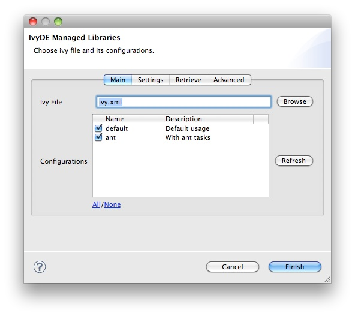
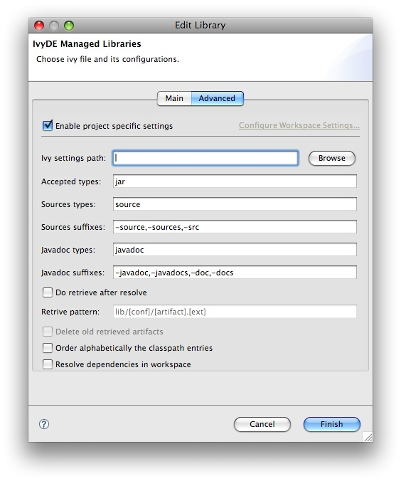

Classpath Container
You are fed up with updating the class path of all your projects each time you add or remove one dependency! IvyDE will help you ! Better ... it will work for you!
Indeed, IvyDE can manage for you all your dependencies, based on a dependencies descriptor file (like ivy.xml file) it will provide a class path container for your IDE.
| Obviously IvyDE class path container can be based on a ivy.xml file, but it also manages Maven pom.xml file! |
Create the container
You've just installed the IvyDE plugin from our updatesite, and now you want to enjoy it quickly!Nothing easier, just follow these steps:
- Ensure the ivy.xml file or maven pom.xml can be accessed under the project folder of your eclipse "Navigator" view.
- Open the "Add Library" form of Eclipse (In package Explorer, in popup menu of your project choose : [Build Path]/[Add Libraries]).

- Select "IvyDE Managed Dependencies" item.

- Select an ivy.xml file or a maven pom.xml and the desired configurations.
 - You then might want to have a special configuration for your project, a configuration different from the global one. Then select the "Advanced" panel and click on "Enable project specific settings". Every configuration entry behaves exactly is the same way as the global ones.

Your class path is set and you can see all dependencies in one unique folder of the package explorer (folder name = <ivy file name>[<configuration>]).

Edit the container configuration
Configure Ivy file and configuration
During life of your project you can change the ivy.xml file or maven pom.xml and change the configuration you wantto use.
These properties can be accessed by contextual menu of the IvyDE class path container.

You can also edit it via the build path configuration. Open the build path configuration dialog, select the "Libraries" panel and select the IvyDE classpath container. Then you will be able to click on the button "Edit": the IvyDE classpath container configuration dialog will pop up.
This is particularly useful when Eclipse hides the empty classpath containers (since Eclipse 3.3), and then this is only way to trigger a resolve.
Resolve dependencies
You can explicitly ask for a dependencies resolution from your class path container.This command will invoke the "resolve" ivy task and update your class path container.
There is also a "refresh" action: this action is similar to the resolve one, it just doesn't do a full resolve if a report already exists in the cache. This is particularly useful if you work also with ant and a command line so you won't do two full resolve.
Printer Friendly